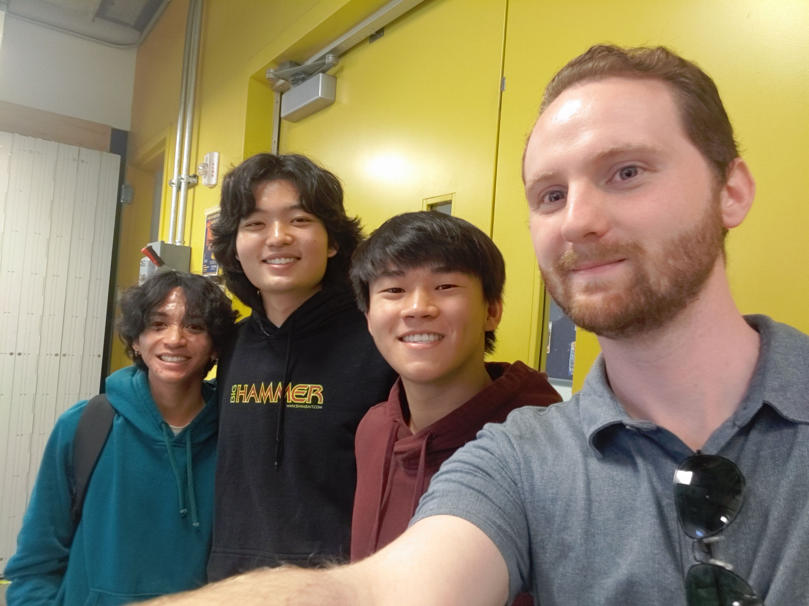

This was our first chassis attempt for our robot, and our first attempt at soldering the potentiometers and photoresistors.

A video of our prototype robot following a line
This was our final robot design. Note the Arduino shield and changes to the photoresistor mount.

This was our final project poster

Our final team photo
And a video of our robot competing
PID control is a system of managing a feedback loop. It stands for Proportional, Integral, Derivative. The P value effects the current error. I accounts for past values, and D estimates future trends. The P and I values decrease the function rise time, while D attenuates it.
We chose a P value of 43, an I value of 0, a D value of .06, and an S of 89. These values worked best for us as they allowed our vehicle to have fast responses to the track without overcorrecting. A relatively large P value creates a fast reaction time, which limited our need for a large I value. Our D value was relatively small, as we did not need to attenuate our P and I values by much.
We used larger P and D values on frequency sweep track with a low speed, but we reduced the P and D on the straighter track, as the straighter track required less pathfinding and more speed. The circular track required a balance of the four values.